Fabulous Sock is 80% Australian extra fine superwash merino and 20% nylon. 400 metres in every 100g skein, dyed by us in our Dulwich Hill studio, in more than 140 shades.
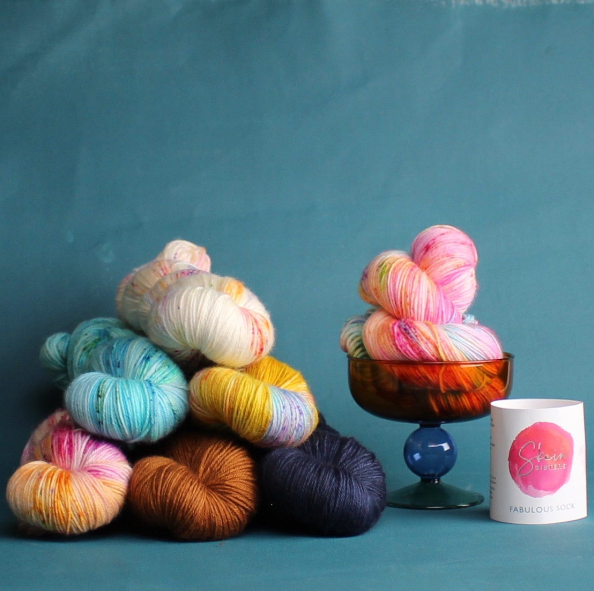
Scroll for the yarn, the colours and the reviews
Two things do the work. The nylon and the ply hold the shape. The base and the dye bath hold the colour.
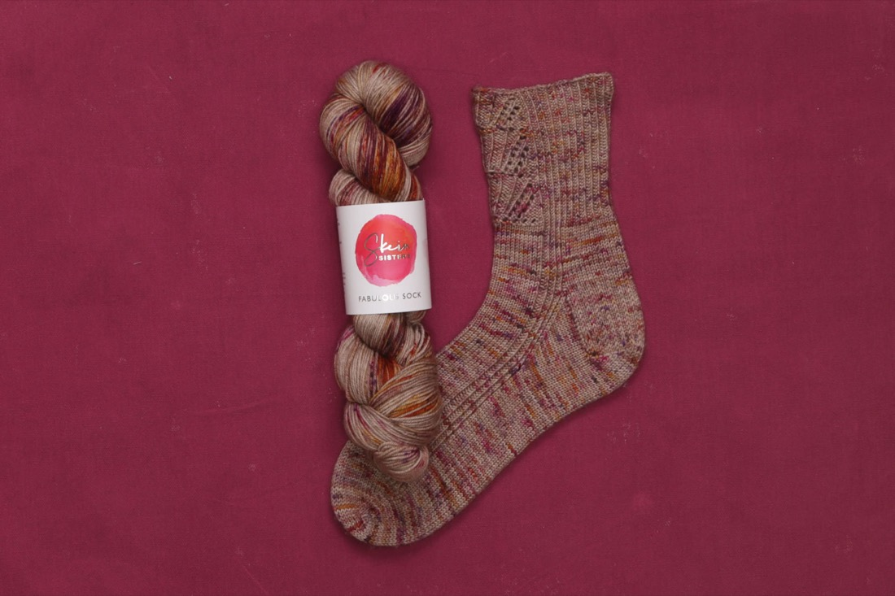
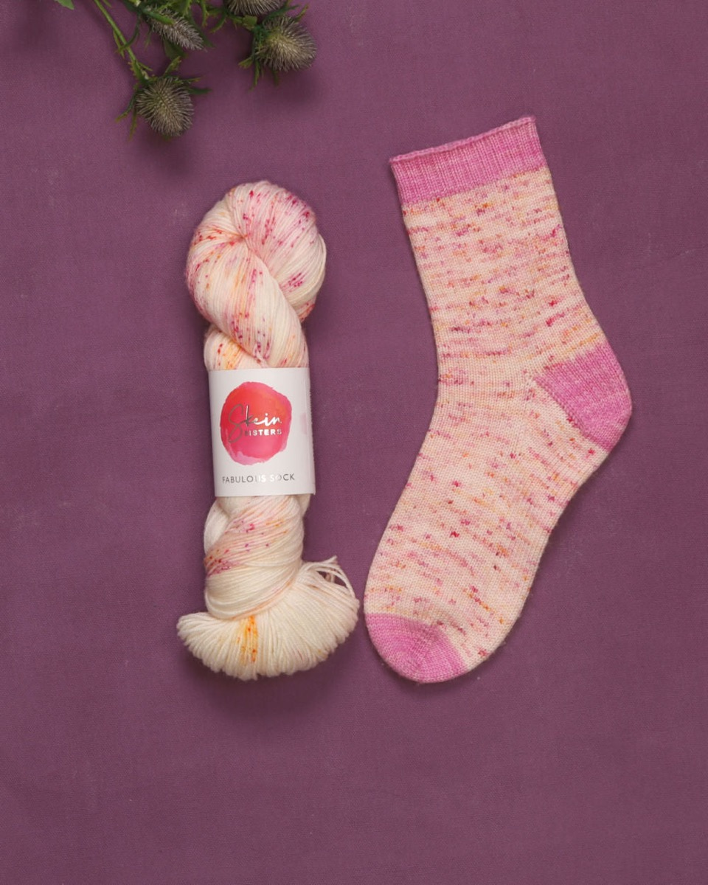
“…can greatly improve the dyeability of wool.”Journal of the Society of Dyers and Colourists, on the superwash treatment
Sources: skeinsisters.com.au; Woolmark, "Machine washable wool"; D. M. Lewis, Journal of the Society of Dyers and Colourists, 1975; Symfonie Yarns, March 2026; Little Skein; SweetGeorgia Yarns, December 2025.
Verbatim, from the product page, the shop's own reviews and Google. Swipe or use the arrows.
Reviewer names as shown on each platform, surnames shortened. Ravelry rating and counts read 30 October 2026.
Solids, semi-solids and speckles, from soft pastels to neons. Tap a colour to open it on the product page.
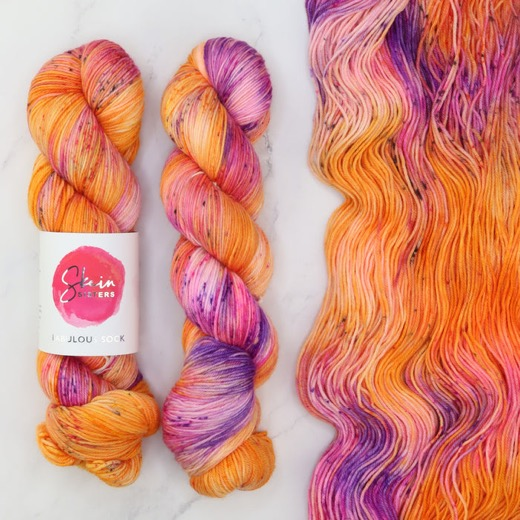
Dyed to orderTango Train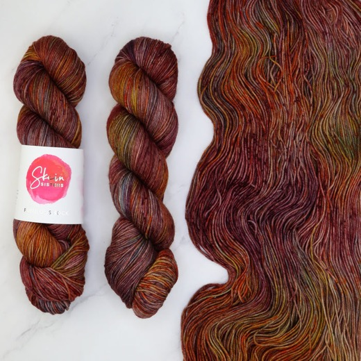
In stockAntique Shop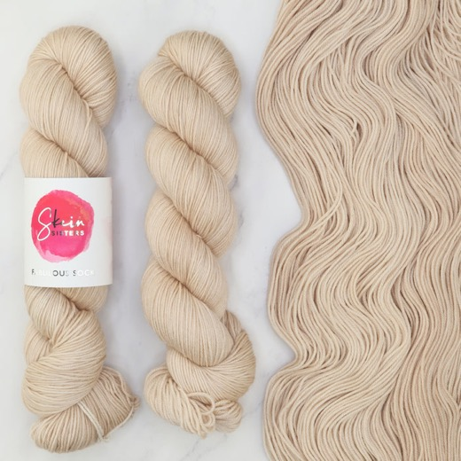
In stockTwine Time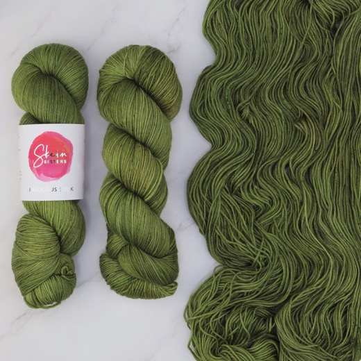
Dyed to orderOlive You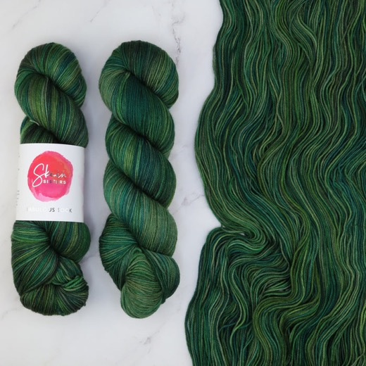
Dyed to orderMedusa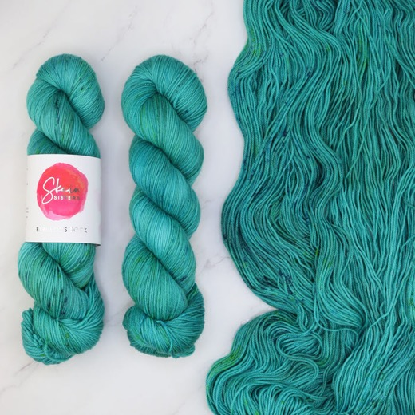
In stockMarine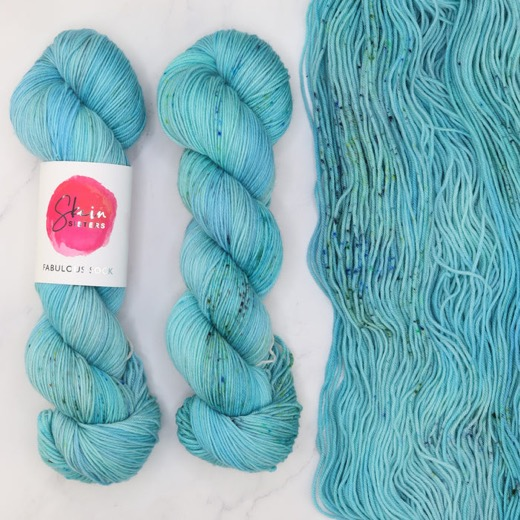
Dyed to orderReef Project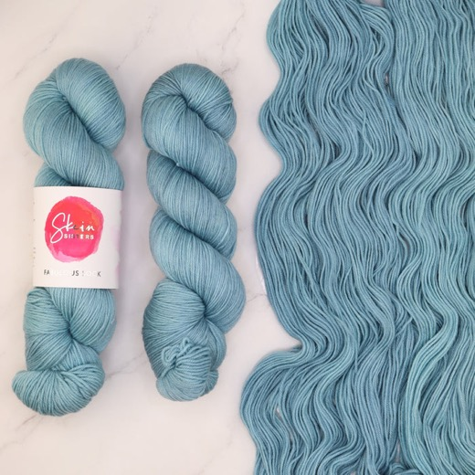
In stockWaterglass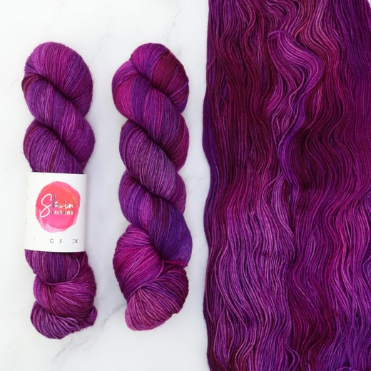
Dyed to orderSorcery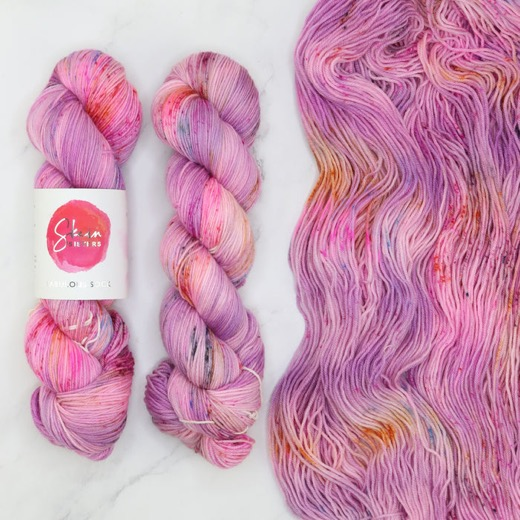
Dyed to orderMagic Land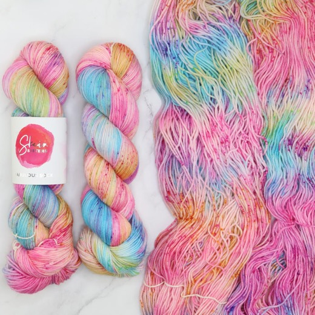
Dyed to orderAll Dolled Up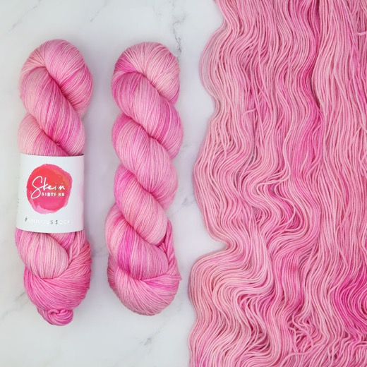
Dyed to orderMarshmallow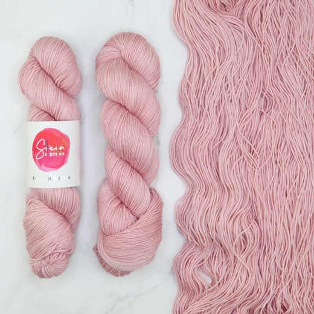
Dyed to orderRosy Tea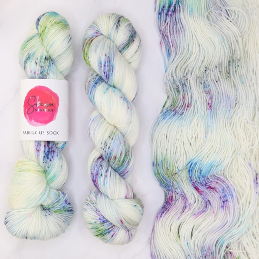
Dyed to orderWaterlilies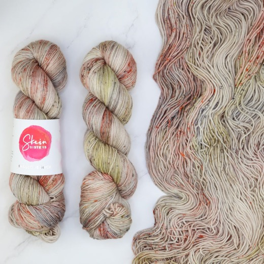
In stockBarn Owl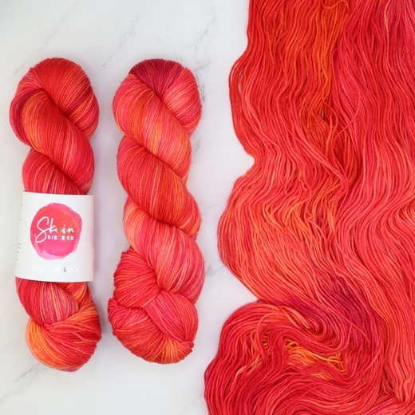
In stockBlast Furnace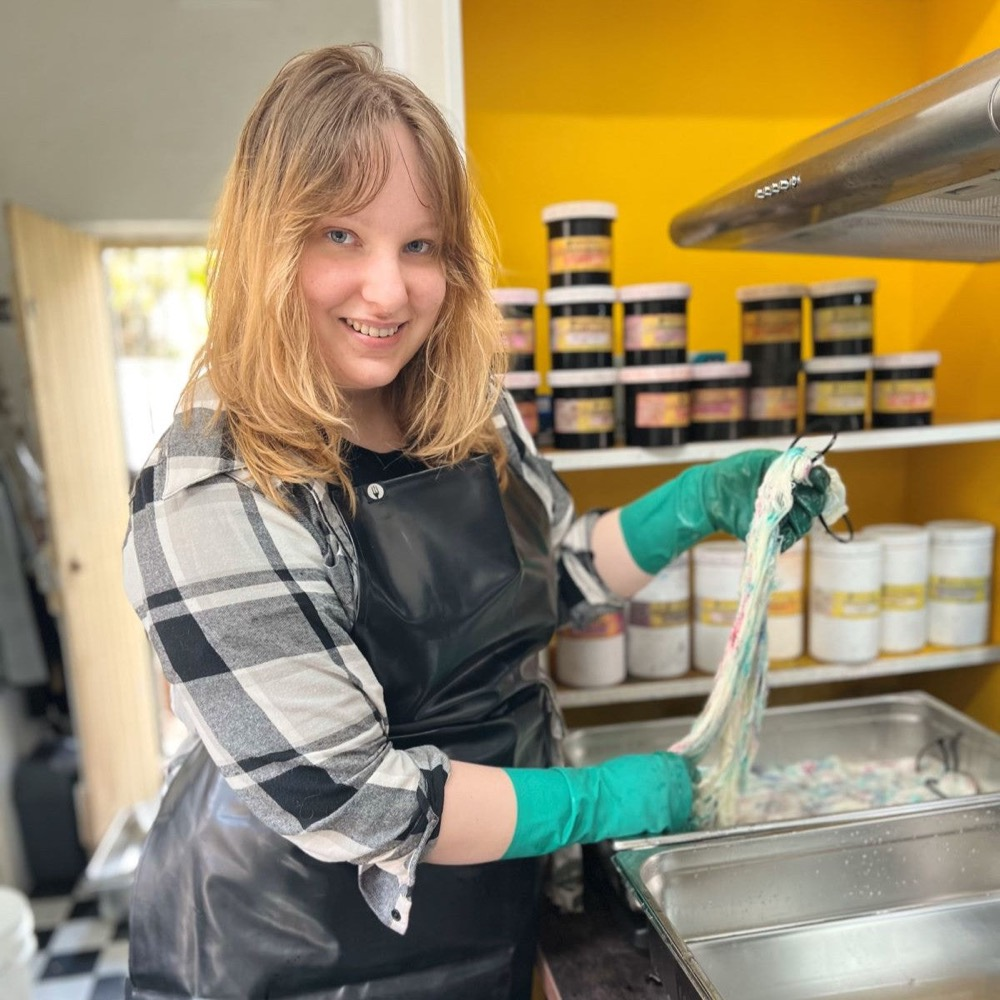
Anything written for 4ply, fingering or sock weight knits or crochets beautifully in Fabulous Sock.
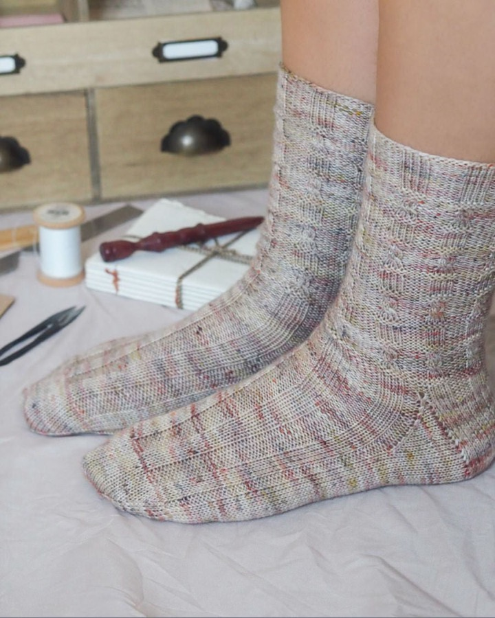
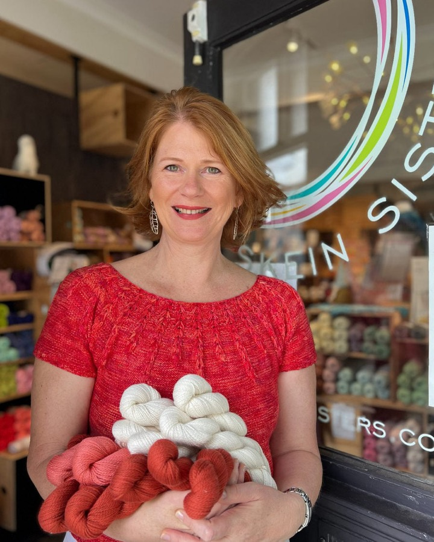
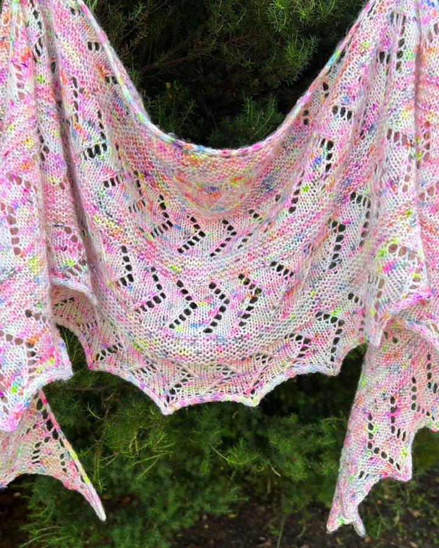
From stock, or dyed to order if the shade has sold out.
Matched dye lots, Australia Post tracking, free shipping over $200.
Stuck on a heel? Our yarn specialists are a phone call away, 7 days.
One 100g skein (400m) knits a typical adult pair, with a little over for heels and toes. Larger feet, a longer cuff or a shawl: check the pattern's yardage.
Yes. Fabulous Sock is superwash treated, so a finished pair goes through the machine on a delicate cycle. Dry flat and skip the tumble dryer.
Julia designs every variegated colourway with her own colour application technique, so it blends in the fabric with little pooling. For a calmer look, choose a solid or semi-solid.
If your colour has sold out, choose 'Dyed to order' and we dye it for you at the same price. The next dye date shows when you choose it.
Yes. On a multi-skein order we check the dye lots match before we pack and post.
Free shipping over $200 in Australia and New Zealand, otherwise $13.50 standard or $17.50 Express. Stock skeins: return them unwound, in their packaging, within 90 days.
Choose a shade, from stock or dyed to order, and you'll land on the product page with it selected.
100g, 400m, 80% Australian merino, 20% nylon.